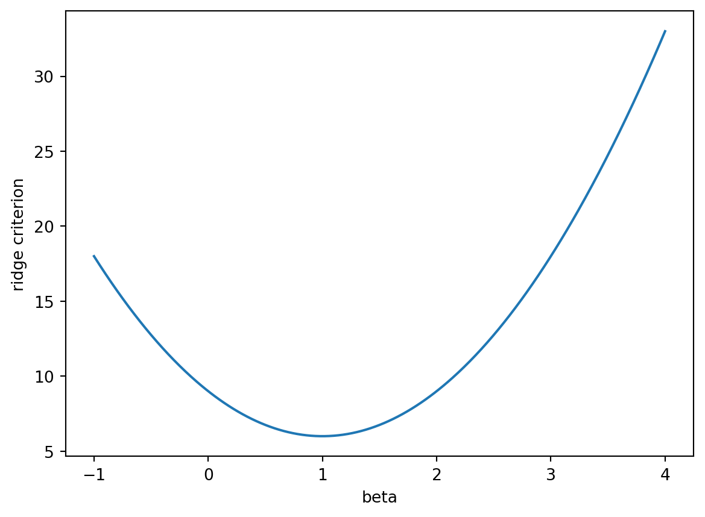

Answer key, Problem set 6: Ridge, Lasso, and Elastic Net
STA 363 | Instructor copy
1. Ridge and the lasso with one coefficient
(a)
y =3lam =2beta = np.linspace(-1, 4, 501)# the ridge criterion at each value of betaridge_criterion = (y - beta) **2+ lam * beta **2plt.plot(beta, ridge_criterion)plt.xlabel("beta")plt.ylabel("ridge criterion")plt.show()# the value of beta where the criterion is smallestbeta_min = beta[np.argmin(ridge_criterion)]print("smallest on the grid at:", beta_min)print("formula gives:", y / (1+ lam))

smallest on the grid at: 1.0
formula gives: 1.0
The two blanks are lam * beta ** 2 and y / (1 + lam). The criterion is a parabola with its lowest point at \(\beta = 1\), where it equals \((3 - 1)^2 + 2(1)^2 = 6\). The formula gives \(3/(1 + 2) = 1\), so the two agree. Least squares would give \(\hat\beta = y = 3\), and ridge shrinks it to a third of that.
With \(\lambda = 2\), \(y = 3 > \lambda/2 = 1\), so the formula gives \(3 - 1 = 2\), which matches the grid. With \(\lambda = 8\), \(|y| = 3 \leq \lambda/2 = 4\), so the formula gives 0, which also matches.
(c) The lasso curve has a corner at \(\beta = 0\), because \(|\beta|\) has slope \(-1\) to the left of zero and \(+1\) to the right. With \(y = 3\) and \(\lambda = 8\), the slope of the criterion is
\[
\begin{aligned}
\text{just left of } 0: &\quad -2y - \lambda = -6 - 8 = -14 \\
\text{just right of } 0: &\quad -2y + \lambda = -6 + 8 = 2
\end{aligned}
\]
The curve is still falling when it reaches zero and is already rising just past it, so its lowest point is the corner itself. In general zero is the minimum exactly when the slope is at most 0 just left of zero and at least 0 just right of it, \(-2y - \lambda \leq 0 \leq -2y + \lambda\), which is \(|y| \leq \lambda/2\), the zero case of \(\hat\beta^L\).
The ridge criterion is smooth, with slope \(-2y\) at \(\beta = 0\). That slope is nonzero whenever \(y \neq 0\), so zero is never the bottom of the curve. The formula says the same thing: \(y/(1 + \lambda)\) shrinks \(y\) by a proportion, and a proportion of a nonzero number is nonzero for any finite \(\lambda\).
(d) The lasso is less flexible than least squares (ISLP option iii). “The lasso will give better (test) prediction accuracy than least squares when its increase in bias is less than its decrease in variance.” The penalty limits how large the coefficients can be, so the lasso searches a smaller set of fits than least squares does, and at \(\lambda = 0\) it is least squares. Part b shows the cost: with \(\lambda = 2\) the lasso estimate is 2 where least squares gives 3, a pull of \(\lambda/2 = 1\) toward zero. In return, shrunken and zeroed coefficients move less from one training sample to the next.
with equality when \(\beta_1\) and \(\beta_2\) have the same sign or one of them is zero. So every same-signed pair with a given sum has the same RSS and the same penalty. Take \(a = 2\), \(y_1 = 3\), \(\lambda = 1\) and pairs with sum \(s = 1.4375\):
\(\beta_1\)
\(\beta_2\)
RSS
\(\lvert\beta_1\rvert + \lvert\beta_2\rvert\)
objective
1.4375
0
0.03125
1.4375
1.46875
0.7
0.7375
0.03125
1.4375
1.46875
0
1.4375
0.03125
1.4375
1.46875
1.6
\(-0.1625\)
0.03125
1.7625
1.79375
Ridge’s squared penalty was smallest at the even split and broke this tie. The absolute value penalty is flat along the whole same-signed stretch, so it cannot. The problem reduces to choosing the sum,
\[g(s) = 2\left(y_1 - as\right)^2 + \lambda|s|.\]
With \(y_1/a > 0\) a negative \(s\) makes both terms worse than \(s = 0\), so the minimizer has \(s \geq 0\). For \(s > 0\),
when this is positive, that is when \(\lambda < 4ay_1\). Otherwise \(\hat{s} = 0\) and the only solution is \(\beta_1 = \beta_2 = 0\).
The lasso solutions are every pair with \(\beta_1 + \beta_2 = \hat{s}\) and \(\beta_1, \beta_2 \geq 0\): a line segment from \((\hat{s}, 0)\) to \((0, \hat{s})\). With \(a = 2\), \(y_1 = 3\), \(\lambda = 1\), \(\hat{s} = 1.5 - 1/16 = 1.4375\), which is the sum used in the table. (When \(y_1/a < 0\) the segment runs through negative values instead.) A full answer needs the tie argument and the description as same-signed pairs with a common optimal sum. Solving for \(\hat{s}\) goes beyond what the question asks.
The lasso returns \((1.4375, 0)\), one endpoint of the segment from part b. scikit-learn’s Lasso minimizes \(\frac{1}{2n}\text{RSS} + \alpha\sum_j|\beta_j|\). Multiplying by \(2n = 4\) gives \(\text{RSS} + 4\alpha\sum_j|\beta_j|\), so alpha=0.25 is \(\lambda = 1\), and the sum 1.4375 matches \(\hat{s}\).
Elastic net returns about 0.724 and 0.722, nearly an even split. The exact solution has both coefficients equal to \(47/65 \approx 0.723\). The small gap is the solver stopping at its default tolerance, and adding tol=1e-12 gives 0.7231 for both. Students may report either and should describe it as an even split, matching what ridge did in problem set 5.
With the columns swapped, the lasso returns \((1.4375, 0)\) again. The two columns are identical, so the swapped matrix is the same matrix, and the lasso again puts everything on whichever predictor sits in the first column. In terms of the original predictors, predictor 2 now carries the whole coefficient and predictor 1 gets zero.
(d) Column order decided it. scikit-learn fits the lasso by coordinate descent, starting from zero and updating \(\beta_1\), then \(\beta_2\), in order. The first update for \(\beta_1\) already lands on the optimal sum \(\hat{s}\). Every point on the segment has the same objective, so the update for \(\beta_2\) leaves it at zero and the solver stops at the first solution it reaches.
Which predictor a lasso model keeps from a correlated group can therefore come down to column order or small quirks of the sample. A dropped predictor can be as strongly related to the response as the kept one, and the kept predictor is better read as standing in for its group. Elastic net’s squared penalty spreads the coefficient across the group instead, which is why it split evenly in part c.
Least squares has a cross-validated MSE of about 42.64, ridge about 42.55 (at \(\alpha \approx 8.90\)), and the lasso about 42.53 (at \(\alpha \approx 0.050\)). The chosen lasso model uses 10 of the 12 predictors, dropping age and tax. For scale, predicting the training-fold mean for every tract gives a cross-validated MSE of about 74.4.
The three methods differ by about 0.1, while the fold-to-fold standard error is about 11. With 506 tracts and 12 predictors, least squares already has little variance for shrinkage to remove, the same pattern as problem set 5 question 4e with 200 training players.
tax is the second most correlated predictor with crim (0.58), after rad (0.63), yet the lasso drops it. The two are correlated at 0.91, so once rad is in, tax adds little. This is question 2 on real data.
Elastic net chooses \(\alpha \approx 0.045\) and l1_ratio\(= 0.7\), with a cross-validated MSE of about 42.50. It is the lowest of the four, by 0.03, a gap far smaller than the standard error, so it amounts to a tie.
The minimum cross-validated MSE is about 42.53 with a standard error of about 11.29, so the threshold is about 53.82. The largest alpha under it is about 2.45, with a cross-validated MSE of about 51.77. Two predictors survive: rad, with a standardized coefficient of about 2.90, and lstat, at about 0.04.
Students who compute the standard error from cross_val_score fold scores with ddof=1, as in application exercise 10, get a standard error of about 11.90. The pick then moves one grid point to \(\alpha \approx 2.87\), and rad is the only survivor. Either answer is correct, and the point is the same: the one standard error rule keeps essentially one predictor.
(d) Several answers are reasonable if they are justified with cross-validated error and the size of the gaps, rather than training error.
4. Classifying high crime tracts
# create a new outcome that is 1 if `crim` is above the median and 0 otherwisehigh = (Boston["crim"] > Boston["crim"].median()).astype(int)X_tr, X_te, y_tr, y_te = train_test_split( X_bos, high, test_size=0.3, random_state=363, stratify=high)
The slope is negative, so the estimated probability falls as distance grows, and a tract is labeled high crime when its dis is below the cutoff. At 0.5 that is dis below about 3.49, and at 0.2 it is dis below about 4.81. The lower threshold adds the tracts with dis between 3.49 and 4.81, the next band out from the employment centers.
There are 92 such tracts, and 45 of them are high crime, so the added band is close to an even split. Across all 506 tracts, sensitivity rises from 0.81 to 0.99 and specificity falls from 0.73 to 0.55. A full answer gives the two cutoffs and describes the added tracts by their distance.
The accuracy is \(140/152 = 0.921\), the sensitivity is \(69/76 = 0.908\), and the specificity is \(71/76 = 0.934\). logit.predict(X_te) uses the same 0.5 cutoff and gives the same matrix.
The null classifier accuracy is \(76/152 = 0.5\). high splits at the median, so exactly half of the 506 tracts are high crime, and stratify=high keeps the test set at 76 of each.
Accuracy is a more useful summary here than on Default. Accuracy is a weighted average of sensitivity and specificity, with weights equal to the class proportions:
On Default, where 3.3% defaulted, accuracy was almost entirely specificity, and the null classifier already scored 96.7%, so accuracy had little room to separate a good model from one that predicts “no” for everyone. Here the weights are both 0.5, the null classifier scores 50%, and the model’s 92% is a large improvement that reflects both kinds of error equally. Accuracy still counts a false positive and a false negative as equally costly, so it is the right summary only when those costs are similar.
(c)
# the test probabilities from part bprobs = logit.predict_proba(X_te)[:, 1]high_probs = probs[y_te ==1]low_probs = probs[y_te ==0]# count the pairs where the high crime tract has the larger probabilitywins =0for p_high in high_probs:for p_low in low_probs:if p_high > p_low: wins +=1print("by hand:", wins / (len(high_probs) *len(low_probs)))print("roc_auc_score:", roc_auc_score(y_te, probs))
by hand: 0.9672783933518005
roc_auc_score: 0.9672783933518005
The three blanks are logit.predict_proba(X_te)[:, 1], p_high > p_low and len(high_probs) * len(low_probs). There are \(76 \times 76 = 5776\) pairs, and the high crime tract has the larger probability in 5587 of them, so the AUC is \(5587/5776 = 0.967\). roc_auc_score gives the same value.
The AUC is the probability that a randomly chosen high crime tract gets a larger estimated probability than a randomly chosen low crime tract. At 0.967 the model ranks the two classes almost perfectly, and it uses no threshold, so it summarizes the ranking across every threshold at once. roc_auc_score counts a tied pair as half a win. (There are no ties here, so a student who writes >= gets the same answer.)
Replacing each probability with its log odds leaves the AUC unchanged at 0.967. The log odds \(\log(p/(1 - p))\) is strictly increasing in \(p\), so \(p_{\text{high}} > p_{\text{low}}\) exactly when the log odds of the high crime tract is larger. Every pair is won or lost the same way, and the AUC depends only on those comparisons. Any strictly increasing transformation of the scores gives the same AUC.
Data from James, G., Witten, D., Hastie, T., Tibshirani, R., and Taylor, J. (2023). An Introduction to Statistical Learning with Applications in Python. Springer. Questions 1 to 3 are adapted from Chapter 6 exercises 2, 5, 6 and 11, and question 4 from Chapter 4 exercises 6 and 16.